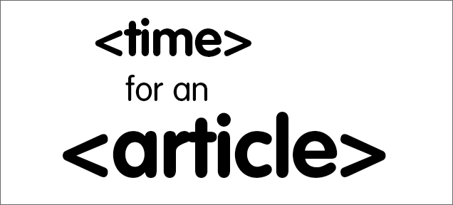
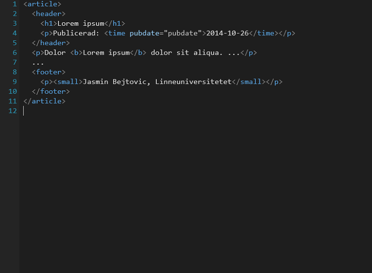
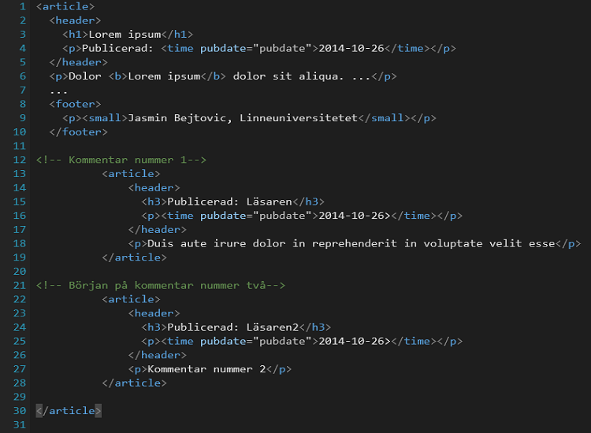
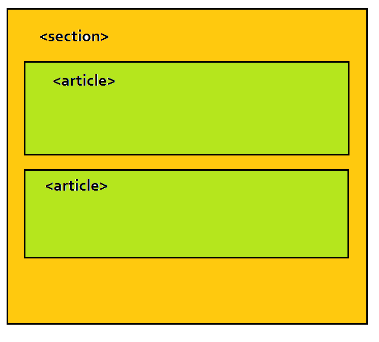
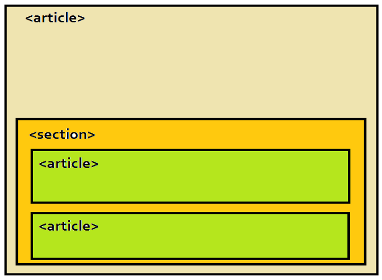
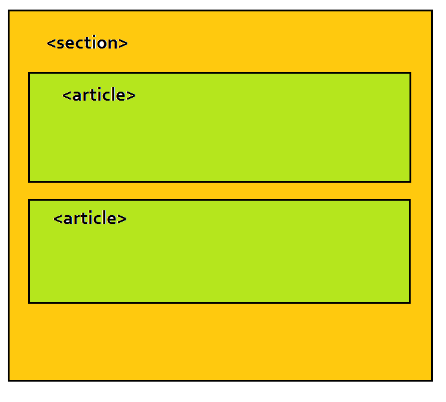
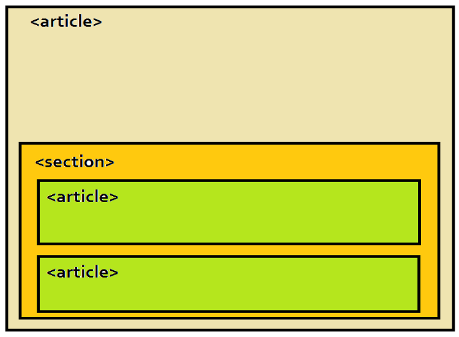
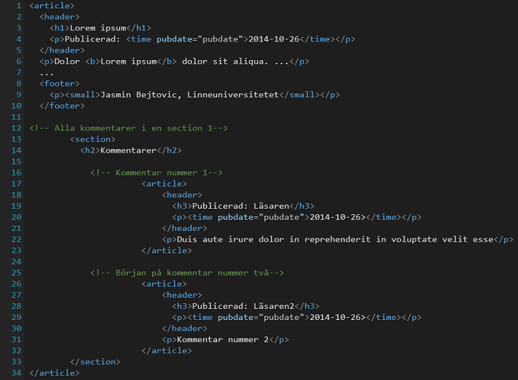
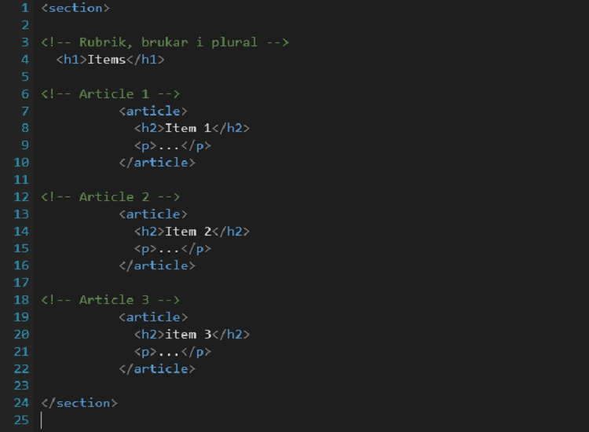

article
Article-taggen i HTML5
Skapad av Jasmin Bejtovic / Twitter
Article-taggen i HTML5
Vem är jag?
- Jasmin Bejtovic, 36 år gammal
- Kommer från Bosnien-Hercegovina, bor i Sverige sedan 2008
- Har examen i IT teknik från 2003
- Jobbat som professionell schackspelare
- Har erfarenhet av windows-forms programmering
Article-taggen i HTML5
Article taggen
Definition och beskrivning"The article element represents a complete, or self-contained, composition in a document, page, application, or site and that is, in principle, independently distributable or reusable, e.g. in syndication."
Article-taggen i HTML5
HTML5 Semantiska element för struktur
- <header>
- <footer>
- <section>
- <article>
- <main>
- <nav>
- <aside>
- <figure> <figcaption> <details> <summary>
Article-taggen i HTML5
Några exempel
 Article-taggen i HTML5
När använda?
- Blogginlägg
- En nyhet
- Forum inlägg
- Kommentar på nyhet eller blogginlägg
Article-taggen i HTML5
<article> eller <section>
"The section element represents a generic section of a document or application."
"The article element represents a complete, or self-contained, composition in a document, page, application, or site ...."
Article-taggen i HTML5
Nästling
 



Article-taggen i HTML5
section nästlad i article
Article-taggen i HTML5
article nästlad i section
Article-taggen i HTML5
Attributer och tillgänglighet
- Google Chrome 6.0
- Internet Explorer 9.0
- Mozzila Firefox 4.0
- Safari 5.0
- Opera 11.0
Article-taggen stödjer alla globala attributer i HTML5
Article-taggen stödjer alla events attributer i HTML5
Default CSS egenskap är display:block;
Article-taggen i HTML5
Sammanfattning
- <article> definition
- Några exempel
- När använda
- <section> eller <article>
- Nästling
- Attributer och tillgänglighet
Article-taggen i HTML5
Frågor?
Article-taggen i HTML5